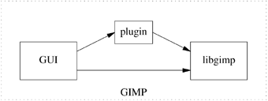

| [ Team LiB ] |
|
4.4 LibrariesOne consequence of the emphasis that the Unix programming style put on modularity and well-defined APIs is a strong tendency to factor programs into bits of glue connecting collections of libraries, especially shared libraries (the equivalents of what are called dynamically-linked libraries or DLLs under Windows and other operating systems). If you are careful and clever about design, it is often possible to partition a program so that it consists of a user-interface-handling main section (policy) and a collection of service routines (mechanism) with effectively no glue at all. This approach is especially appropriate when the program has to do a lot of very specific manipulations of data structures like graphic images, network-protocol packets, or control blocks for a hardware interface. Some good general architectural advice from within the Unix tradition, particularly applicable to the resource-management challenges of this sort of library is collected in The Discipline and Method Architecture for Reusable Libraries [Vo]. Under Unix, it is normal practice to make this layering explicit, with the service routines collected in a library that is separately documented. In such programs, the front end gets to specialize in user-interface considerations and high-level protocol. With a little more care in design, it may be possible to detach the original front end and replace it with others adapted for different purposes. Some other advantages should become evident from our case study. There is a flip side to this. In the Unix world, libraries which are delivered as libraries should come with exerciser programs.
Besides easing the learning curve, library exercisers often make excellent test frameworks. Experienced Unix programmers therefore see them not just as a form of thoughtfulness to the library's users but as an indication that the code has probably been well tested. An important form of library layering is the plugin, a library with a set of known entry points that is dynamically loaded after startup time to perform a specialized task. For plugins to work, the calling program has to be organized largely as a documented service library that the plugin can call back into. 4.4.1 Case Study: GIMP PluginsThe GIMP (GNU Image Manipulation program) is a graphics editor designed to be driven through an interactive GUI. But GIMP is built as a library of image-manipulation and housekeeping routines called by a relatively thin layer of control code. The driver code knows about the GUI, but not directly about image formats; the library routines reverse this by knowing about image formats and operations but not about the GUI. The library layer is documented (and, in fact shipped as "libgimp" for use by other programs). This means that C programs called "plugins" can be dynamically loaded by GIMP and call the library to do image manipulation, effectively taking over control at the same level as the GUI (see Figure 4.2). Figure 4.2. Caller/callee relationships in GIMP with a plugin loaded. Plugins are used to perform lots of special-purpose transformations such as colormap hacking, blurring and despeckling; also for reading and writing file formats not native to the GIMP core; for extensions like editing animations and window manager themes; and for lots of other sorts of image-hacking that can be automated by scripting the image-hacking logic in the GIMP core. A registry of GIMP plugins is available on the World Wide Web. Though most GIMP plugins are small, simple C programs, it is also possible to write a plugin that exposes the library API to a scripting language; we'll discuss this possibility in Chapter 11 when we examine the 'polyvalent program' pattern. |
| [ Team LiB ] |
|